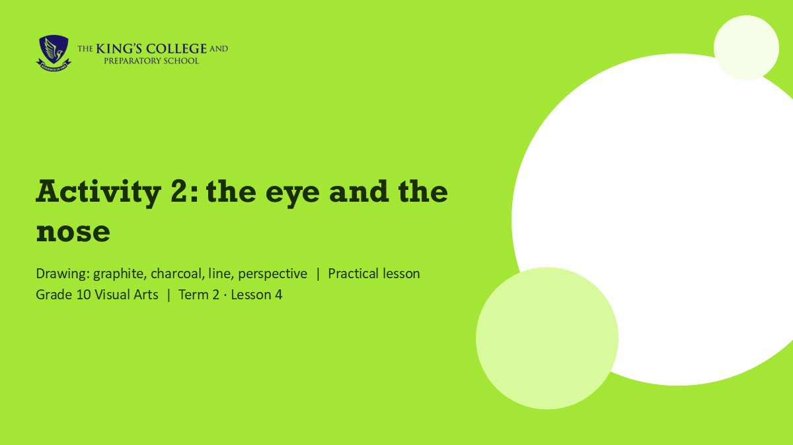

Term 2 · Lesson 4 · Practical lesson
Activity 2: the eye and the nose
Start here
Today I will
- Understand the structure and proportions of the eye and nose
- Draw them as three-dimensional forms using tone
- Make step-by-step studies for PAT 2, Activity 2
Think first
When you draw an eye from memory, why does it often look like a lemon with a circle in it?
Words to Know
| Word | Meaning |
|---|---|
| Proportion | The size of one part compared to another, such as the eye to the whole head. |
| Iris | The coloured ring of the eye, with the dark pupil in the centre. |
| Eyelid | The fold of skin that wraps over the eyeball and has its own thickness. |
| Bridge | The upper, bony part of the nose between the eyes. |
| Nostril | The opening on the underside of the nose, shaped by the soft wings around it. |
| Form | Something with height, width and depth, shown in a drawing through tone. |
Slides

Notes
The structure and proportions of the eye and the nose; drawing them as forms, not symbols.
Drawing the eye as a form
- The ball: Start with a light circle: the eyeball sits in a socket, so lids wrap around a sphere.
- The lids: Draw the upper lid with a high curve and thickness; the lower lid is flatter and gentler.
- Iris and pupil: The upper lid usually covers the top of the iris. Keep the circle round, not an oval.
- Tone: Shade the white of the eye slightly darker at the corners, and leave one highlight in the iris.
- Lashes and brow: Add last, in groups, curving in the direction they grow. Do not outline every lash.
Drawing the nose as a form
- Simple blocks: See the nose as a wedge: the bridge, a rounded ball at the tip and two wings at the sides.
- Light and shadow: Shade one side of the bridge and the underside of the nose, which faces away from the light.
- Nostrils: Nostrils are dark shapes inside the underside, not two black dots. Vary their shape and tone.
- No hard outline: Show the edge of the nose through tone changes, not a dark line down the side.
Remember
Draw the eye as a ball and the nose as a block, and let tone do the rest.
Practical
You need: Hand mirror, A3 cartridge paper folded into four, HB, 2B and 4B pencils, putty eraser, VJ
Step-by-step eye and nose studies
- Fold your A3 sheet into four; the eye and the nose go in the first two quarters.
- Using the mirror, draw the eye in five small stages in the first quarter, from ball to lashes.
- Then draw one larger, finished eye with a full range of tone.
- In the second quarter, draw the nose in four stages, from simple blocks to finished tone.
- Check proportion: is the iris the right size compared to the eye opening?
- Annotate in your VJ: two things you noticed in the mirror that surprised you.
Test yourself
- Why does the upper eyelid usually cover part of the iris?
- How do you show the edge of the nose without a hard line?
- What shape should you start with when drawing an eye?
Show answers
1. The lid wraps over the round eyeball, and in a relaxed eye it rests over the top of the iris. 2. With changes in tone: shadow on one side and under the tip against lighter skin. 3. A sphere (a circle for the eyeball).
Finished early?
Eye in five stages
Build an eye as a form, step by step.
- Draw a light circle for the eyeball in your VJ.
- Wrap the upper and lower lids around it, giving the upper lid thickness.
- Add the iris partly covered by the upper lid, and the pupil.
- Shade the corners of the white of the eye and leave one highlight in the iris.